zkCoins App — Benutzerhandbuch
Privater Bitcoin-Wallet mit Shielded CSV . Keine Adressen on-chain, keine Beträge, keine Verbindungen — nur Zero-Knowledge-Beweise. Diese Doku führt dich durch jeden Screen, den die App heute hat, exakt so wie er in der echten App aussieht.
Alle Screenshots stammen aus den automatisch generierten E2E-Baselines (Linux, Chromium, 1440×900 Desktop / 375×812 Mobile / 768×1024 Tablet). Jede Baseline wird bei jedem PR pixelgenau verglichen — wenn dieser Guide aktuell ist, ist es die App auch.
DEV-Bundle vs. PRD-Bundle: Die DEV-Variante (in diesem Guide gezeigt) hat zusätzlich den Apps-Tab in der Bottom-Navigation und den Mint test BTC-Faucet-Button auf der leeren Wallet — beides via Build-Time-Flags gesteuert und im PRD-Build per Dead-Code-Elimination entfernt. Die 10 MVP-Funktionen sind identisch.
Willkommen & Onboarding
Der erste Screen. Hier entscheidest du, ob du eine neue Wallet erstellen oder eine bestehende wiederherstellen willst.
Beim ersten Aufruf der App siehst du den Welcome-Screen. Zwei Aktionen stehen zur Wahl: CREATE WALLET generiert lokal eine neue 12-Wort-Seed-Phrase und legt damit eine frische zkCoins-Adresse an; Restore existing wallet erlaubt das Importieren einer bestehenden Seed-Phrase. Beide Wege führen am Ende zur passwortgeschützten Wallet.
Wichtig: Keine der Aktionen erzeugt eine On-Chain-Transaktion oder kostet etwas. Die Wallet existiert anfangs nur auf deinem Gerät, verschlüsselt in IndexedDB.
Drei Viewports — gleiches Layout
Die Welcome-Page ist responsiv. Desktop, Tablet und Mobile zeigen exakt denselben Inhalt, nur das Layout passt sich an.
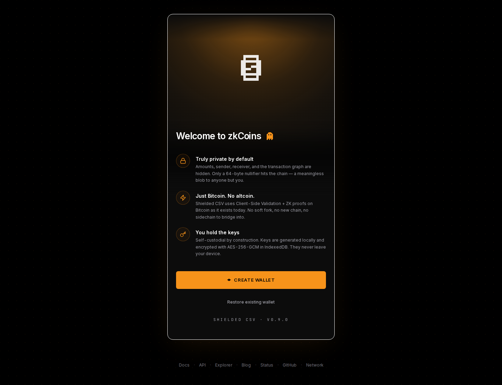
Welcome — Desktop
Volle Breite mit Logo links oben, Hero-Headline, zwei Action-Buttons und Footer-Links.
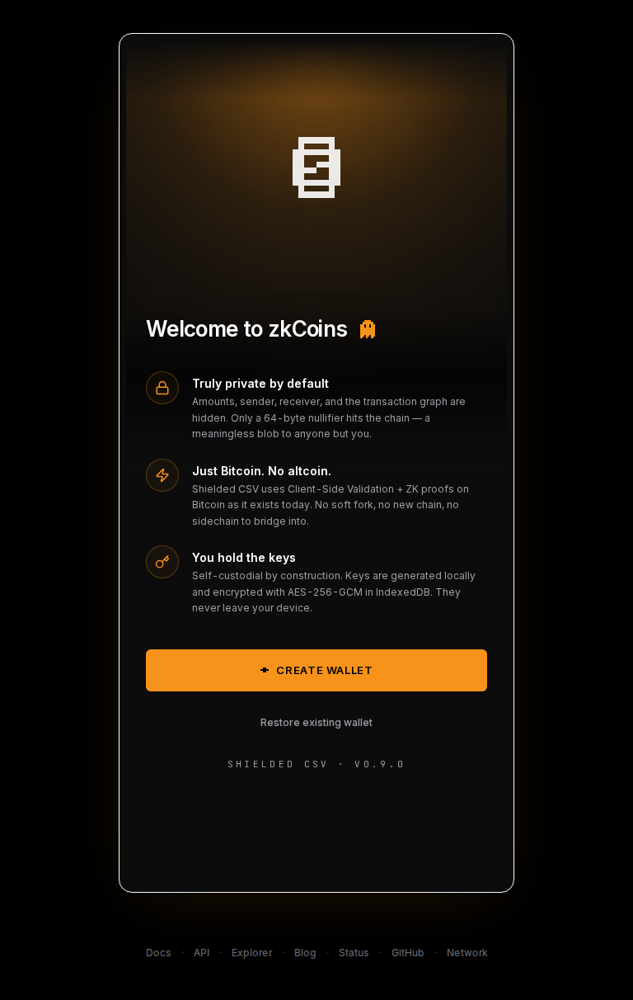
Welcome — Tablet
Identische Komposition, an Tablet-Auflösung angepasst.
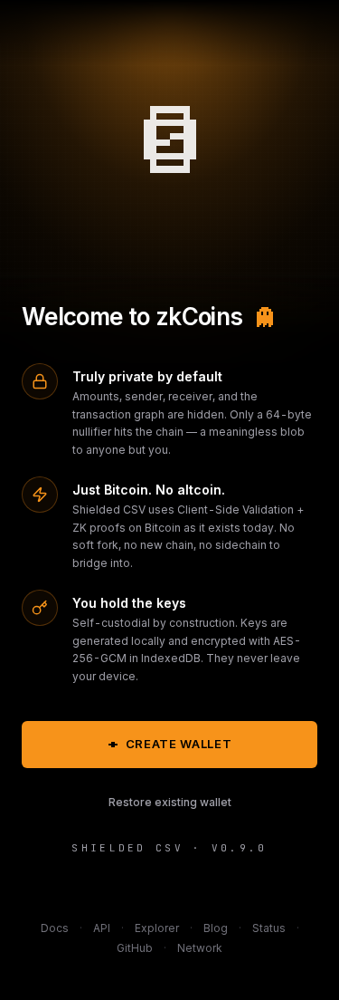
Welcome — Mobile
Vertikal gestapelt, Bottom-Nav nicht sichtbar (kein Account vorhanden).
Hover-Zustände der Action-Buttons
Beim Überfahren mit der Maus heben sich die beiden Aktionen visuell hervor — der Bitcoin-Orange-Akzent macht klar, welche der beiden gerade aktiv ist.
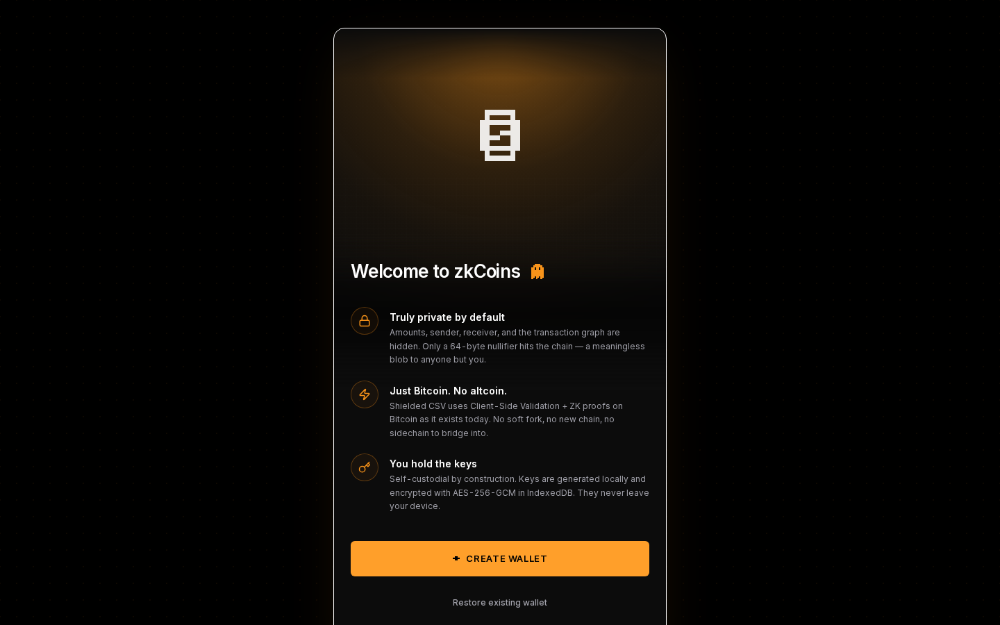
CREATE WALLET (Hover)
Der primäre CTA bekommt einen Bitcoin-Orange-Outline und füllt sich gleichzeitig dezent. Der sekundäre Restore-Link tritt visuell zurück.
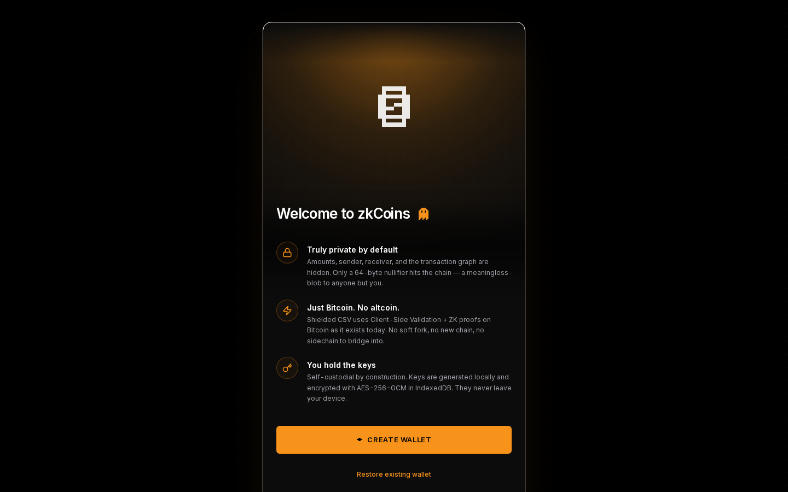
Restore existing wallet (Hover)
Der sekundäre Link unterstreicht sich beim Hover. Funktional gleichwertig — keine Eile, eine bewusste Entscheidung zu treffen.
Wallet erstellen mit Seed Phrase
Der primäre Onboarding-Pfad. 12 BIP-39-Wörter werden lokal generiert, du schreibst sie ab, bestätigst und legst danach ein Verschlüsselungs-Passwort fest.
Nach Klick auf CREATE WALLET führt dich die App durch fünf Stationen: Seed wird generiert → Seed wird angezeigt → du bestätigst, dass du sie aufgeschrieben hast → du setzt ein Passwort → die Wallet öffnet sich.
-
Schritt 1 — Seed generierenDie App ruft
generateMnemonic()im WASM-Modul auf. Das passiert clientseitig, kein Server sieht je deine Mnemonic. Während der Generierung siehst du eine kurze Ladeanimation. - Schritt 2 — Seed anzeigenDie 12 Wörter werden zunächst hinter einem Klick-Overlay versteckt — das schützt vor versehentlichem Vorzeigen. Nach einem Tap erscheinen sie nummeriert in einem Grid.
- Schritt 3 — Aufschreiben bestätigenDu klickst „I've written it down" um zu bestätigen, dass die Wörter sicher offline gespeichert sind.
- Schritt 4 — Passwort setzenDu wählst ein lokales Verschlüsselungs-Passwort. Die Mnemonic wird damit AES-256-GCM-verschlüsselt in IndexedDB abgelegt. Mindestens 8 Zeichen; identische Wiederholung Pflicht.
-
Schritt 5 — Wallet öffnet sichDu landest auf der Wallet-Screen mit Balance 0
und deiner ersten
{8hex}@zkcoins.app-Adresse.
Seed generieren & anzeigen
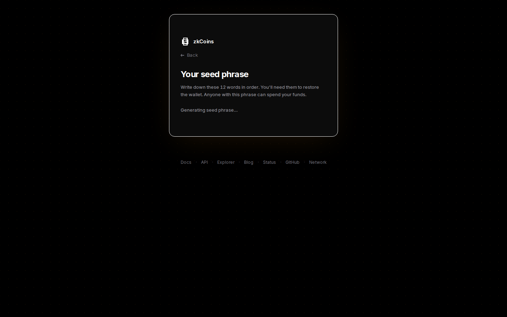
Generating mnemonic…
Kurzer Lade-State während die WASM-Library 128 Bit Entropie zieht und in BIP-39 enkodiert.
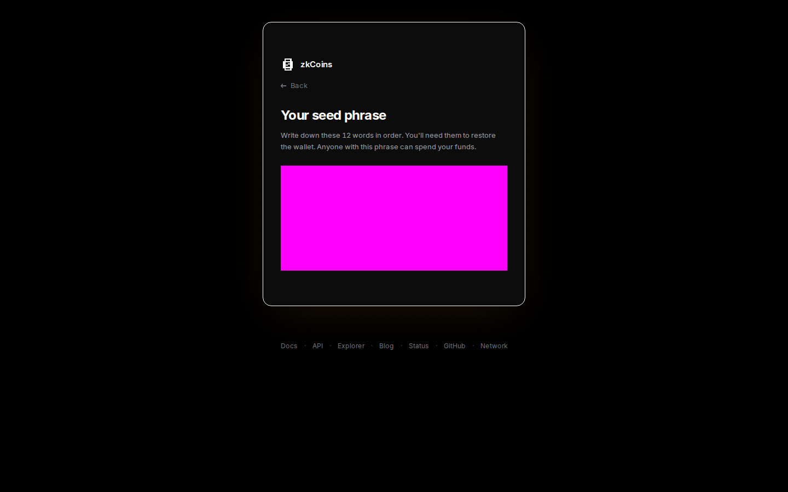
Seed versteckt (Tap to reveal)
Die 12 Wörter sind als unkenntliche Blöcke dargestellt — ein expliziter Klick ist nötig, um sie freizugeben.
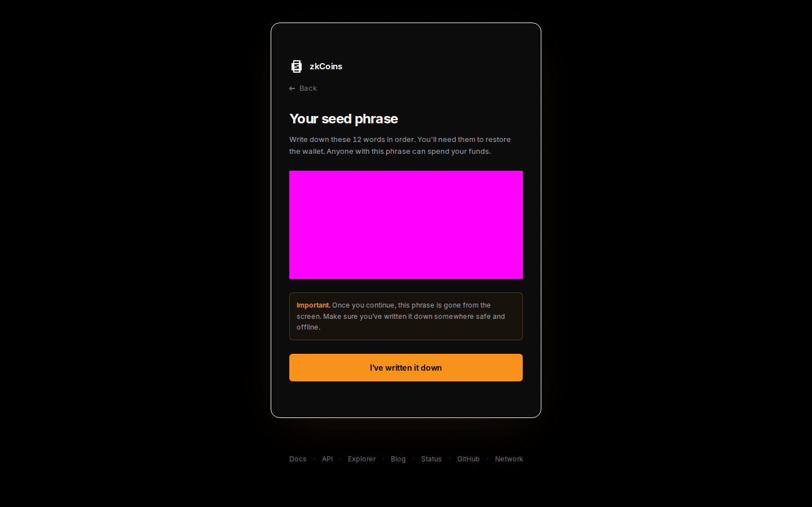
Seed sichtbar
12 BIP-39-Wörter im 3-Spalten-Grid, nummeriert. Schreibe sie ab — du wirst sie zur Wiederherstellung brauchen.
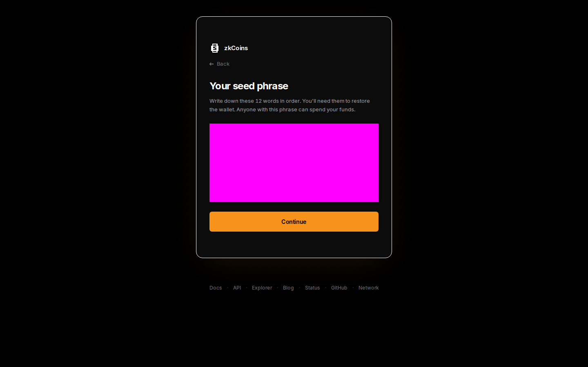
"I've written it down" geklickt
Der Bestätigungs-Button wechselt visuell, der „Continue"-Button wird freigegeben.
Sicherheits-Hinweis: Die Seed-Phrase ist die einzige Sicherheits-Kopie deiner Wallet. Wenn du dein Gerät verlierst und die 12 Wörter nicht hast, sind deine Coins für immer verloren. Es gibt keinen Recovery-Service. Bewahre sie offline auf — Papier oder Metallplatte, nicht in der Cloud.
Passwort setzen
Vier Zustände auf dem Passwort-Setup-Bildschirm — die App gibt sofortiges Feedback bei Eingabefehlern.
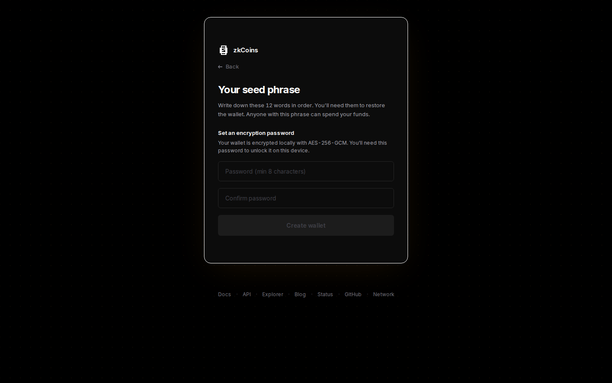
Initial — leer
„Create wallet"-Button ist disabled bis beide Felder ausgefüllt und identisch sind.
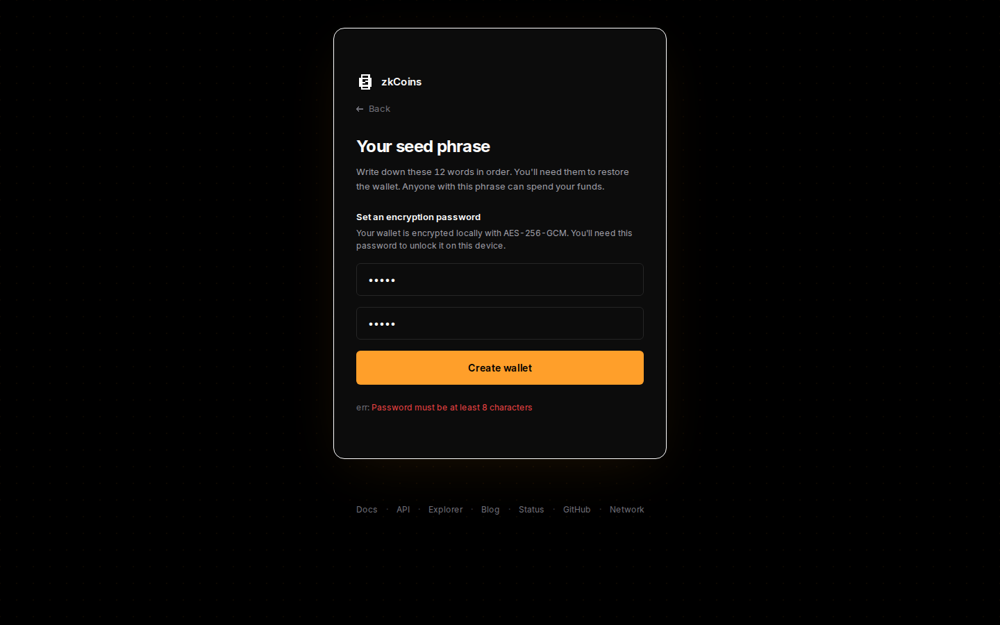
Zu kurz
Mindestens 8 Zeichen werden verlangt. Fehlertext erscheint live unter dem Feld.
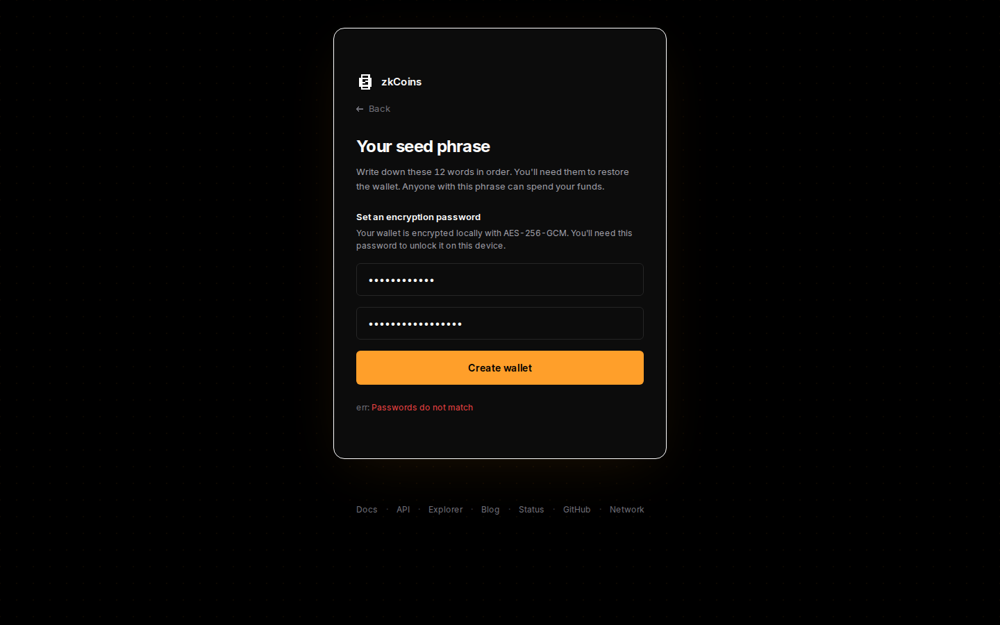
Mismatch
Die beiden Eingaben stimmen nicht überein. Fehlermeldung in Rot direkt unter dem Confirm-Feld.
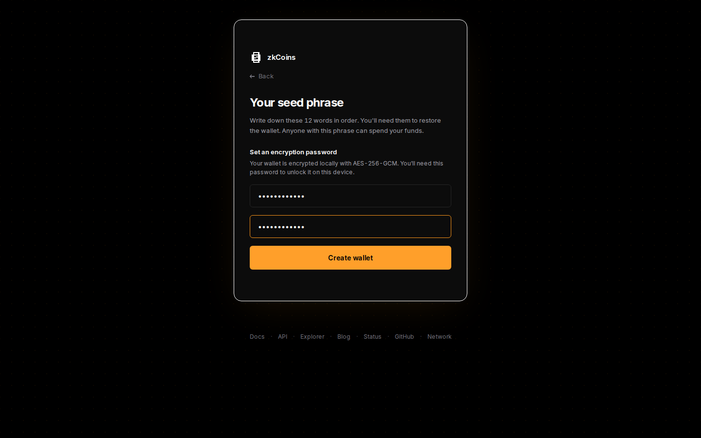
Gültig
Beide Felder OK — der Submit-Button wird Bitcoin-Orange aktiv.
Wallet nach der Erstellung

Wallet — frisch erstellt, 0 sats
Du landest auf der Wallet-Screen. Sichtbar: Balance 0, deine eindeutige
@zkcoins.app-Adresse (oben rechts), Action-Buttons Send/Receive,
Username-Claim-Input (gated), Faucet-Button (DEV) und „No transactions yet".
Bottom-Nav unten mit Wallet/Apps/Settings.
Wallet wiederherstellen aus Seed Phrase
Der zweite Onboarding-Pfad. Du gibst eine bestehende 12-Wort-BIP-39-Mnemonic ein, setzt ein neues lokales Passwort und kannst sofort weiterarbeiten.
Die App validiert die Eingabe in Echtzeit: Wortzahl prüfen, alle Wörter müssen aus dem BIP-39-Wordlist stammen, Checksum muss aufgehen. Erst dann geht der „Continue"-Button frei.
Eingabe der Seed-Phrase
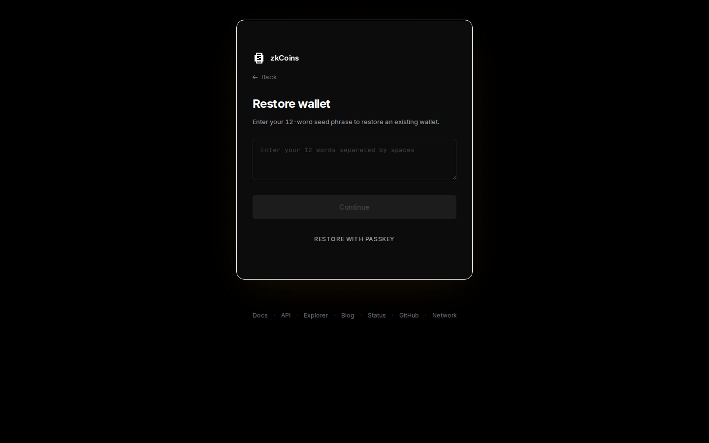
Leer — Initialzustand
Ein Textarea zum Einfügen, „Continue" disabled. Wörter durch Leerzeichen oder Zeilenumbruch getrennt.
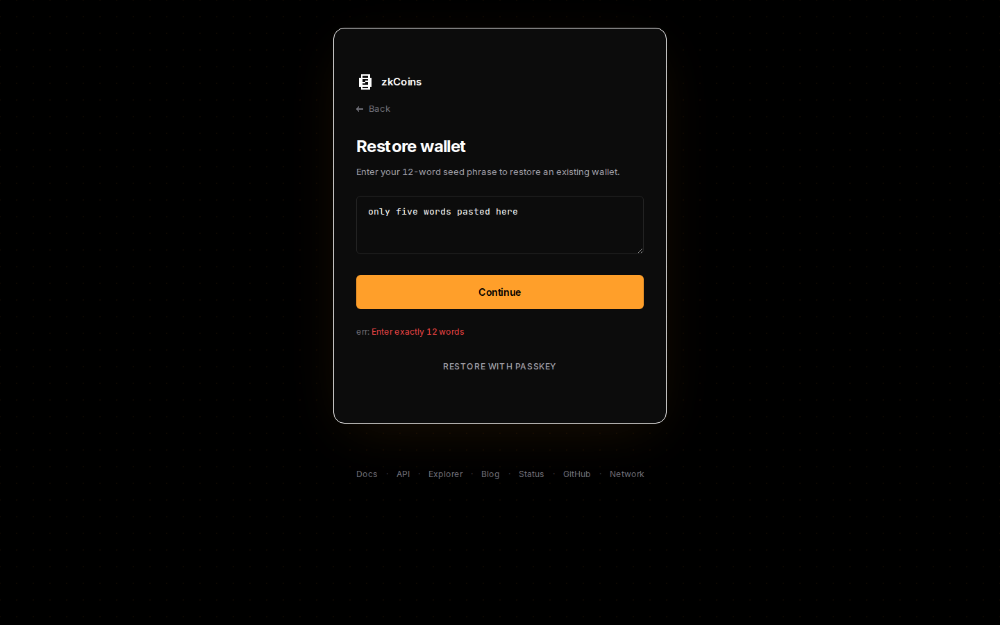
Falsche Anzahl Wörter
Nur 12-Wort-Mnemonics werden akzeptiert. Bei 11 oder 13 zeigt die App den Fehler unter dem Eingabefeld.
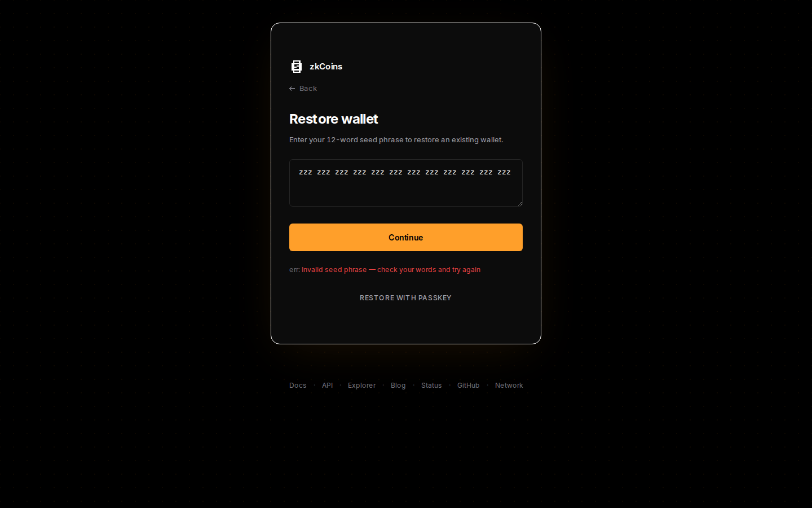
Ungültiges BIP-39-Wort
Mindestens ein Wort ist nicht im BIP-39-Wordlist enthalten oder die Checksum stimmt nicht. Fehlermeldung in Rot.
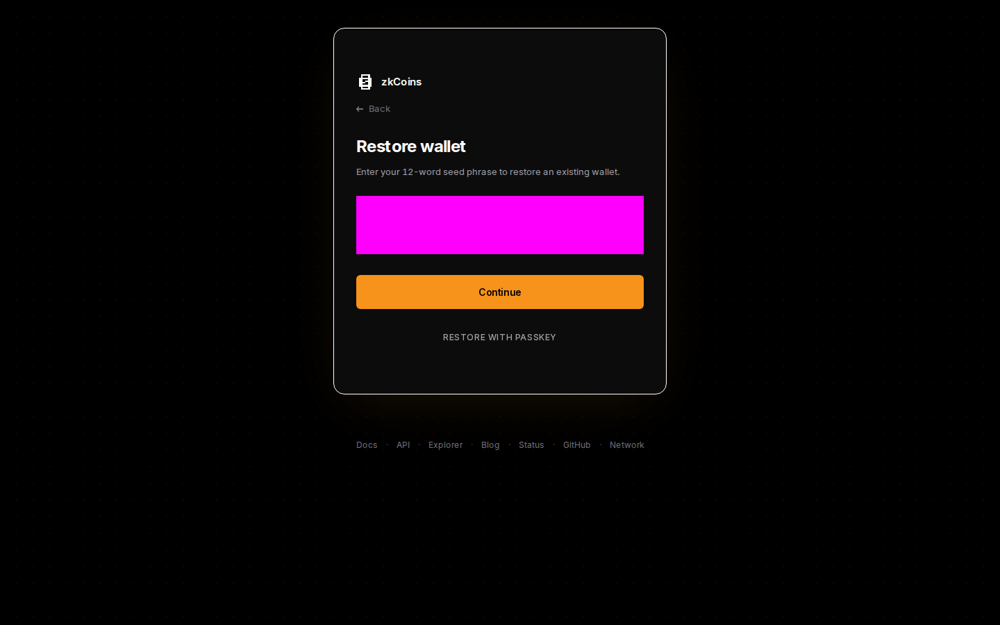
Gültige Mnemonic eingegeben
Wenn alles passt, wird „Continue" freigeschaltet.
Neues Passwort für dieses Gerät
Das Passwort, das du jetzt setzt, gilt nur für die lokale Verschlüsselung auf diesem Gerät. Es ist nicht in der Seed-Phrase enthalten und wird nirgendwo synchronisiert.
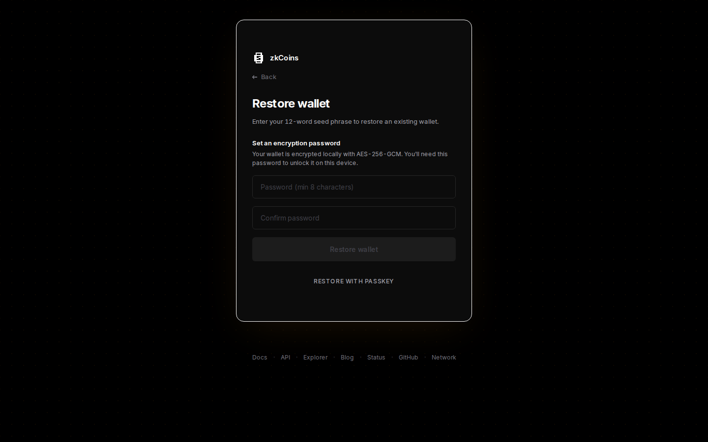
Leer
Identisch zum Create-Flow: Mindestens 8 Zeichen, beide Felder müssen übereinstimmen.
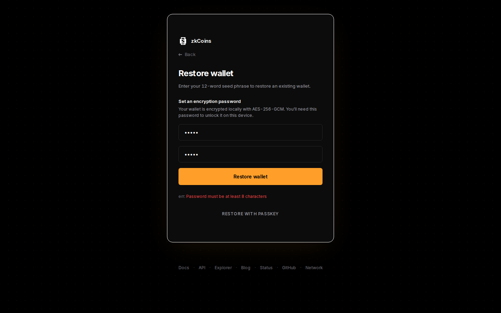
Zu kurz
Sofortiges Feedback bei < 8 Zeichen.
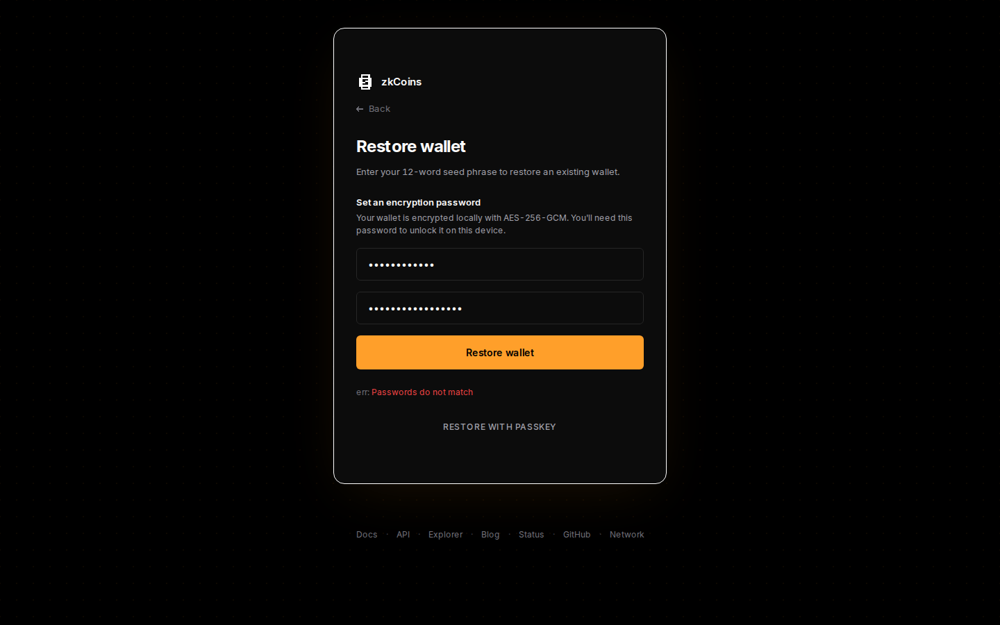
Mismatch
Confirm-Feld weicht ab.
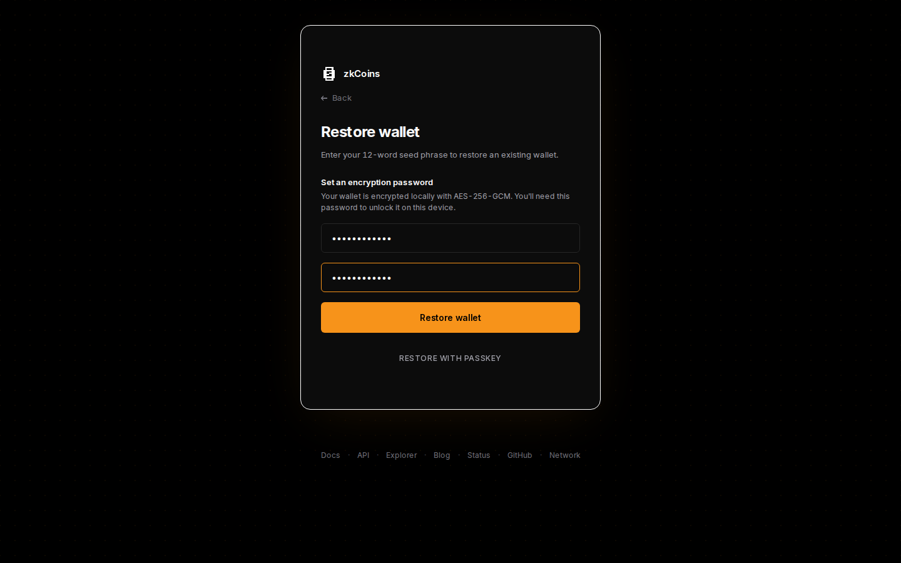
Gültig — Submit aktiv
„Restore wallet" wird Bitcoin-Orange.
Wallet nach Restore

Wallet — wiederhergestellt
Identisch zur frisch erstellten Wallet, nur dass die Adresse aus der wiederhergestellten Mnemonic deterministisch abgeleitet wurde.
Wallet entsperren mit Passwort
Bei jedem App-Start, wenn bereits eine Wallet auf dem Gerät liegt, fragt die App nach dem lokalen Passwort, um die verschlüsselte Mnemonic zu öffnen.
Die Entschlüsselung läuft komplett lokal: das Passwort wird via PBKDF2 mit 600 000 Iterationen zu einem AES-Schlüssel abgeleitet, der die in IndexedDB liegende Mnemonic öffnet. Bei falschem Passwort wirft AES-GCM einen Authentication-Tag-Mismatch — die App zeigt das als „Wrong password" an.
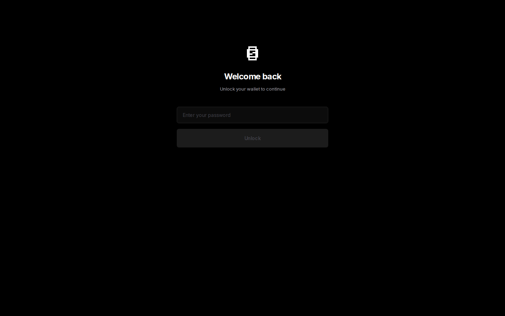
Initial — Welcome back
Großer „Welcome back"-Header, Passwort-Feld, disabled „Unlock"-Button.
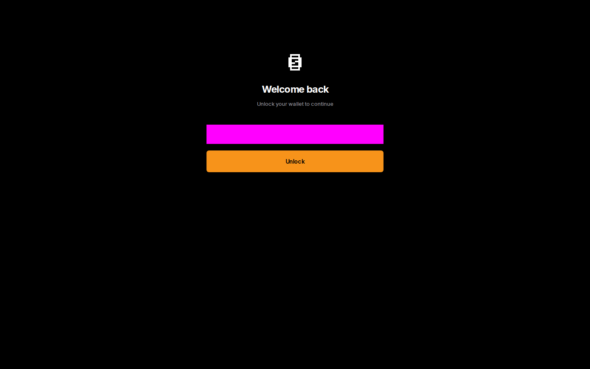
Passwort eingegeben
„Unlock"-Button wird aktiv, sobald das Feld nicht leer ist.
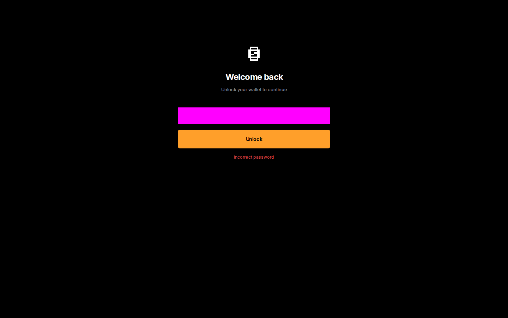
Falsches Passwort
Direkt unter dem Feld: rote Fehlermeldung. Kein Cooldown, kein Rate-Limit — die ganze Härte des Passworts bildet die Sicherheit.

Unlocking…
Während PBKDF2 läuft (ca. 200–400 ms je Gerät), zeigt der Button den Lade-Spinner. Die Verzögerung ist beabsichtigt und macht Brute-Force teuer.

Erfolgreich entsperrt
Du landest in der Wallet mit deinem aktuellen Stand.
Wallet-Übersicht & Balance
Der Haupt-Screen nach dem Login. Hier siehst du dein Guthaben, deine Adresse, deine letzten Transaktionen — und kannst Send/Receive starten.
Der Balance-Wert wird alle 5 Sekunden über GET /api/balance mit dem Server
abgeglichen. Beträge werden in BTC und USD angezeigt; das Auge-Icon rechts vom Betrag
erlaubt Verbergen für Streaming-Sessions oder Bildschirmaufnahmen.
Zero-Balance & Faucet (nur DEV)
Wallet leer · Faucet sichtbar
Wenn die Balance 0 ist, ersetzt ein Banner die Tx-Liste. Auf DEV (Signet) zeigt es zusätzlich einen „Faucet"-Button, der 100 000 sats Test-BTC schickt. Auf Mainnet wird der Button automatisch versteckt.
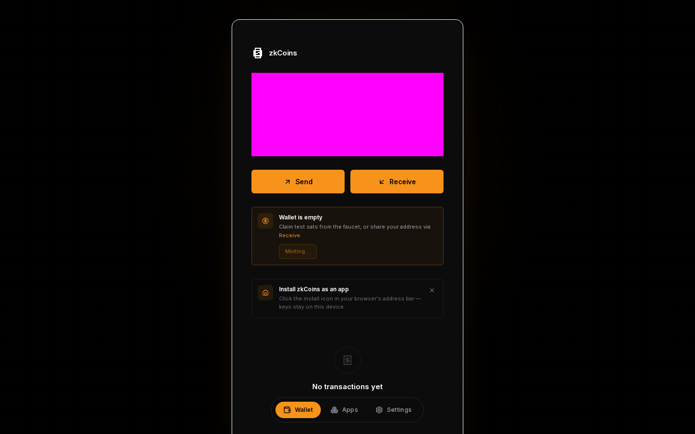
Faucet — Minting…
Nach Klick: der Button zeigt einen Lade-State während
POST /api/mint die Test-Coins ausgibt. Sobald der Server bestätigt,
fließt die Balance ins UI.
Gefundete Wallet — Desktop & Mobile

Funded — Desktop
Vollständig befüllt: Adress-Chip, Balance in BTC und USD, Send/Receive-CTAs, Username-Claim-Input (DEV/gated), Tx-Liste, Network-Activity-Chart, Footer-Links.
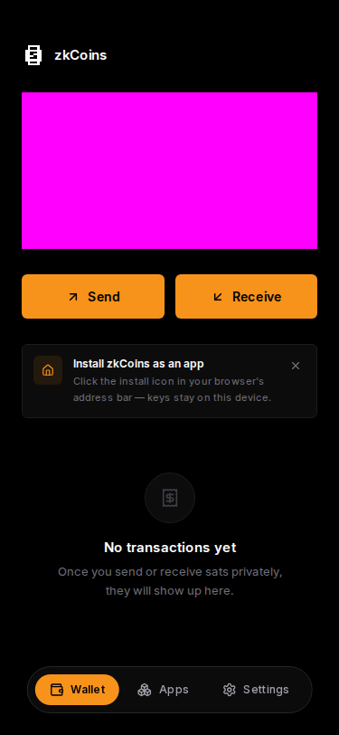
Funded — Mobile
Vertikal gestapelt. Bottom-Nav unten. Sticky Header mit Adress-Chip.
Balance-Sichtbarkeit & Adress-Kopieren

Balance versteckt
Klick auf das Auge-Icon ersetzt den Betrag durch „••••••" — ideal für Screensharing.

Adresse kopiert
Klick auf den Adress-Chip kopiert die volle Adresse in die Zwischenablage und zeigt kurz ein „Copied"-Feedback.
Bitcoin senden (2-Phasen-Proof)
Der zentrale Vorgang: Coins an eine andere zkCoins-Adresse senden. Kryptografisch ein zweiphasiger Schnorr-Signature + Commitment-Prozess; aus User-Sicht eine Recipient-Amount-Confirm-Send-Sequenz.
Hinter den Kulissen passiert: signSendRequest erzeugt eine Schnorr-Signatur
über den Send-Request → POST /api/send reserviert die Output-Coins
serverseitig → der Client berechnet ein lokales Commitment
Schnorr(hash(state || output_coins)) →
POST /api/commit bestätigt den Send. Bei Netzwerkfehlern wird das laufende
Commit in localStorage geparkt und beim nächsten App-Start automatisch nachgereicht (3
Versuche mit Exponential-Backoff).
Empfänger-Eingabe
Die App akzeptiert zwei Formate als Empfänger:
volle 64-Hex-Adresse (kanonisch) oder @username bzw.
$username (in DEV/gated, wird via
/api/username/resolve aufgelöst). Validierung passiert live beim Tippen.
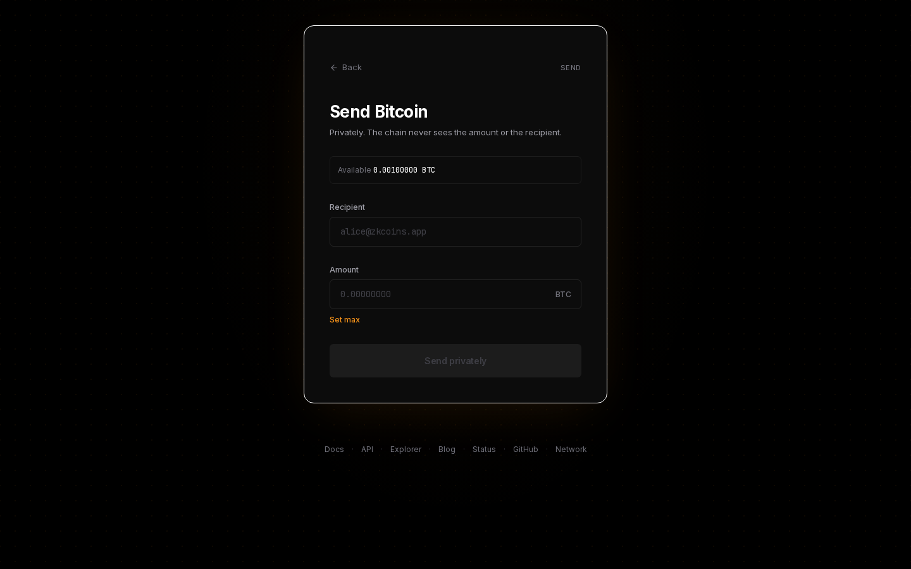
Send — Initialzustand
Leeres Recipient-Feld mit Placeholder „Address or @username", leeres Amount-Feld, „Set MAX"-Link, disabled Submit.
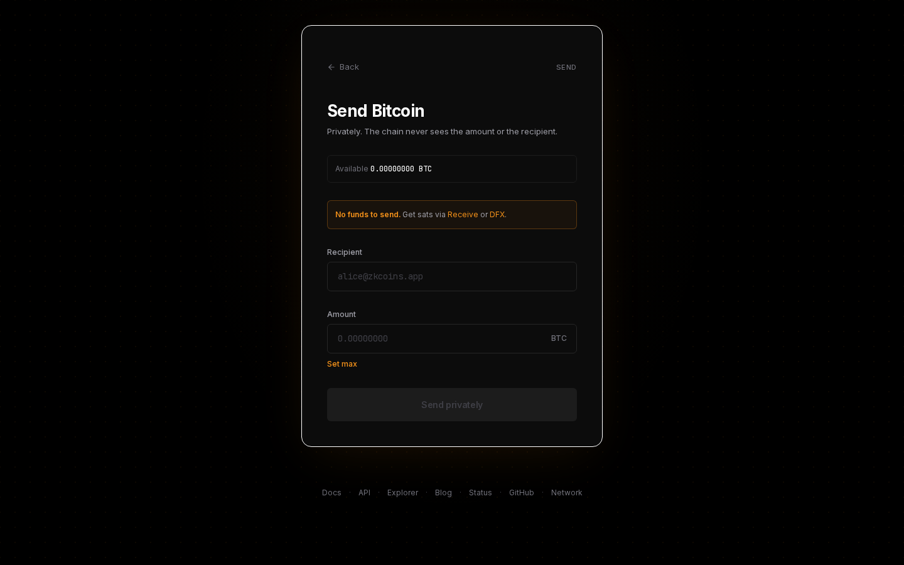
Send ohne Guthaben
Wenn die Balance 0 ist: Top-Banner „Wallet is empty", Faucet-Hinweis (DEV), DFX-Link zum Coin-Kauf (DEV/gated).
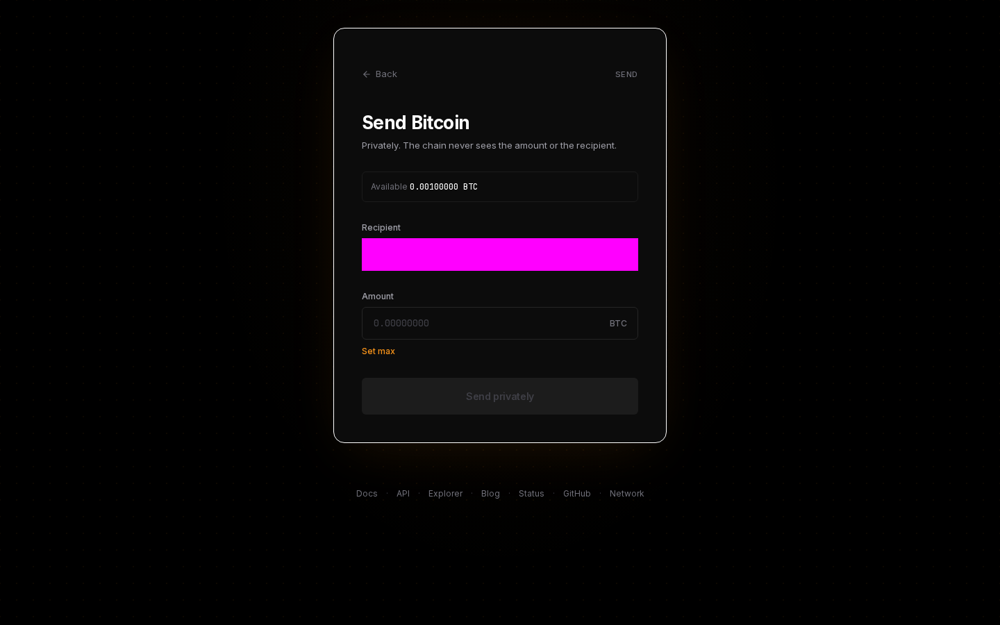
Empfänger — gültige Hex-Adresse
64-Hex-String akzeptiert, kein Resolve nötig, „Continue" wird freigegeben.

Empfänger — Username (DEV)
@user oder $user wird über die Server-API aufgelöst. Resolve passiert beim Continue, nicht beim Tippen.
Betrag-Eingabe
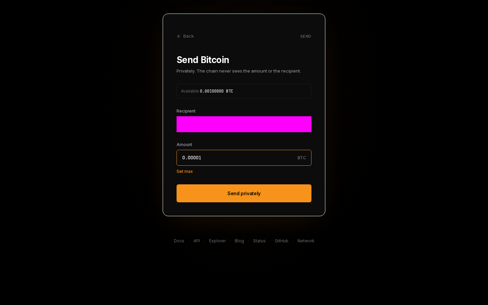
Gültiger Betrag
Numerische Eingabe in sats. Live-Feedback unter dem Feld zeigt den BTC- und USD-Gegenwert. „Continue" wird Bitcoin-Orange.
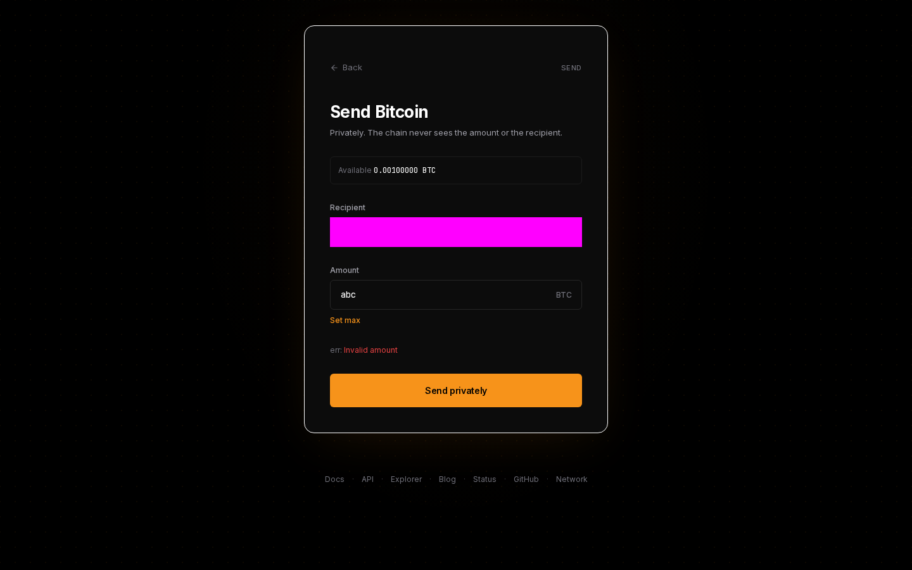
Ungültiger Text
Buchstaben oder Sonderzeichen → sofortiges Feedback, „Continue" bleibt disabled.
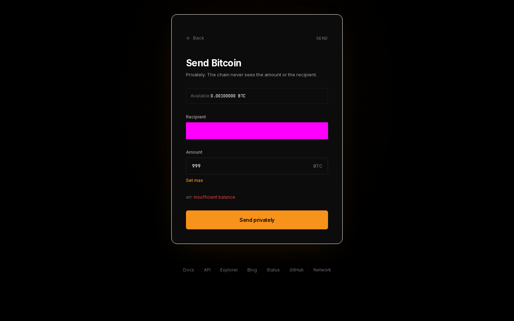
Mehr als verfügbar
Wenn der Betrag deine Balance übersteigt, erscheint „Exceeds available balance". Der Submit bleibt blockiert.
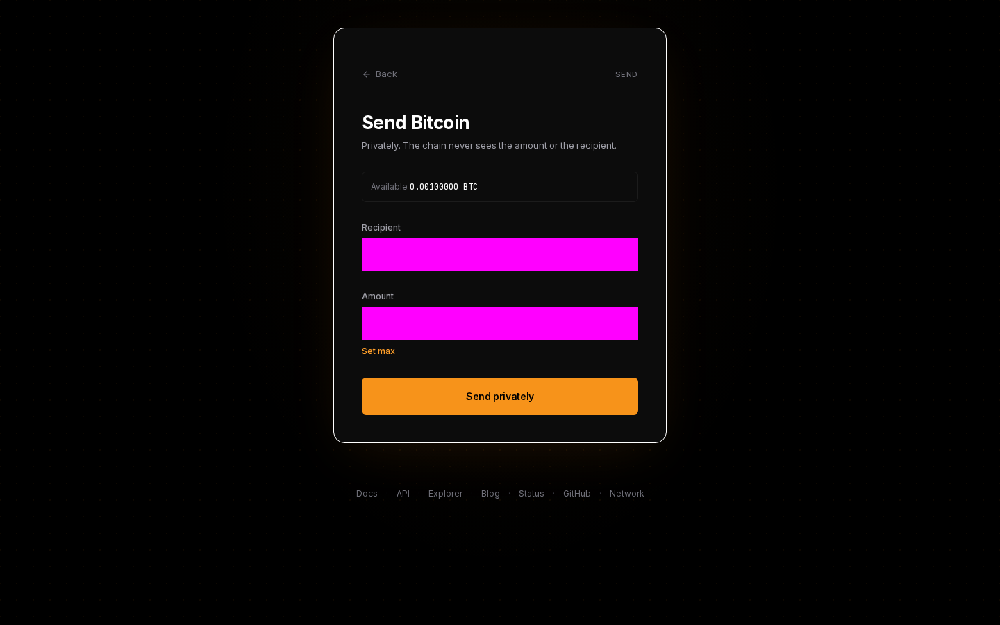
Set MAX angeklickt
„Set MAX" füllt das Feld mit deiner gesamten Balance — abzüglich der minimalen Server-Fee.
Bestätigungs-Dialog
Bevor der Send tatsächlich ausgelöst wird, muss du die Aktion in einem dedizierten Confirm-Dialog absegnen. Der Dialog zeigt Empfänger, Betrag und Fee nochmal — wichtigster Moment, sich nicht zu vertippen.
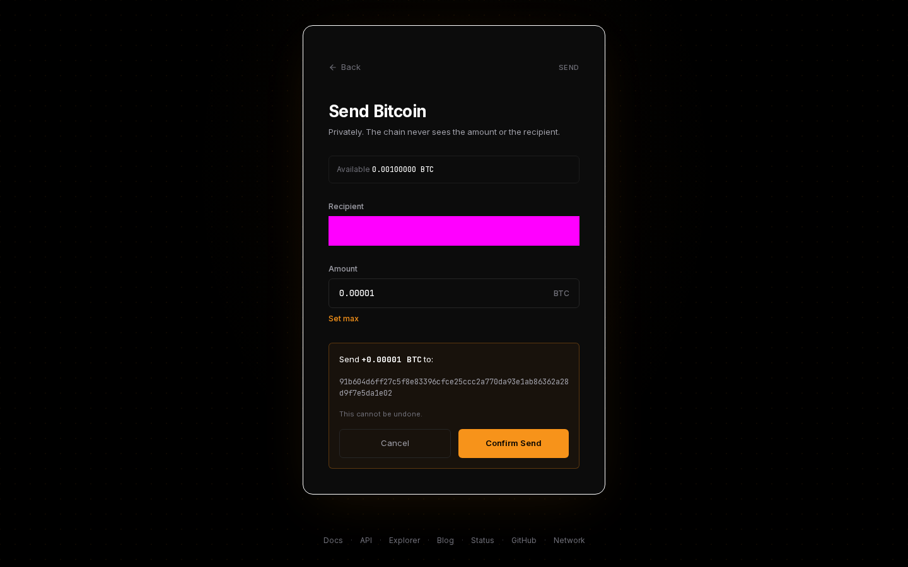
Confirm — Desktop
Volles Confirm-Layout: Empfänger gehighlightet, Betrag gross, Fee transparent. Cancel + „Send now".
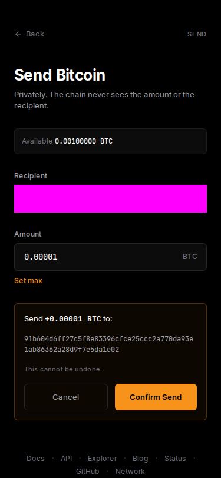
Confirm — Mobile
Bottom-Sheet-Variante, identische Informationen.
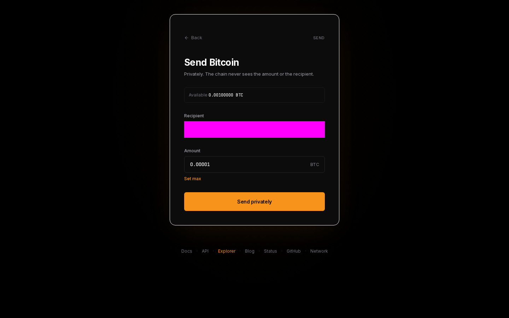
Cancel → zurück zum Formular
Klick auf „Cancel" schliesst den Dialog ohne Aktion. Die Felder bleiben vorbefüllt.
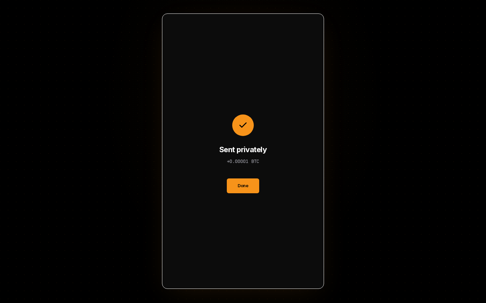
Send erfolgreich
Nach erfolgreichem 2-Phasen-Commit zeigt die App den Proof-Identifier und einen Link zurück zur Wallet. Die Transaktion erscheint sofort in der lokalen Tx-Liste.
Bitcoin empfangen (Adresse + QR)
Wenn dir jemand Bitcoin schicken soll, gibst du ihm deine zkCoins-Adresse. Die App zeigt sie als QR-Code und als Text — beides aus deinem Public Key abgeleitet.
Die Adresse hat das Format {8-hex-prefix}@zkcoins.app für die
UI-Darstellung. Senders sehen ausschließlich das Output, das sie an dich schicken —
keine Adresse, kein Betrag, keine Verbindung. Privatsphäre by design.
Die App rotiert nach jedem Receive automatisch zu einem frischen Public-Key — du musst nichts manuell tun, um Receiver-Adressen pro Sender zu trennen.
Receive-Screen
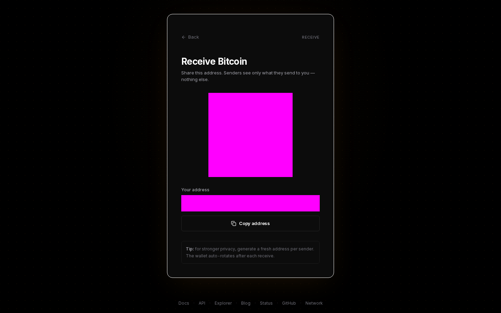
Receive — Desktop
QR-Code mittig, Adresse darunter monospace, „Copy address"-Button, Privacy-Hinweis.
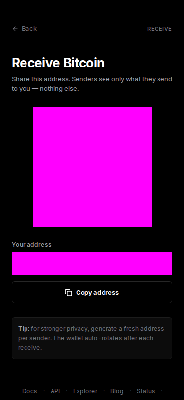
Receive — Mobile
Mobile-optimiert: QR groß, Adresse darunter, Copy-Button volle Breite.
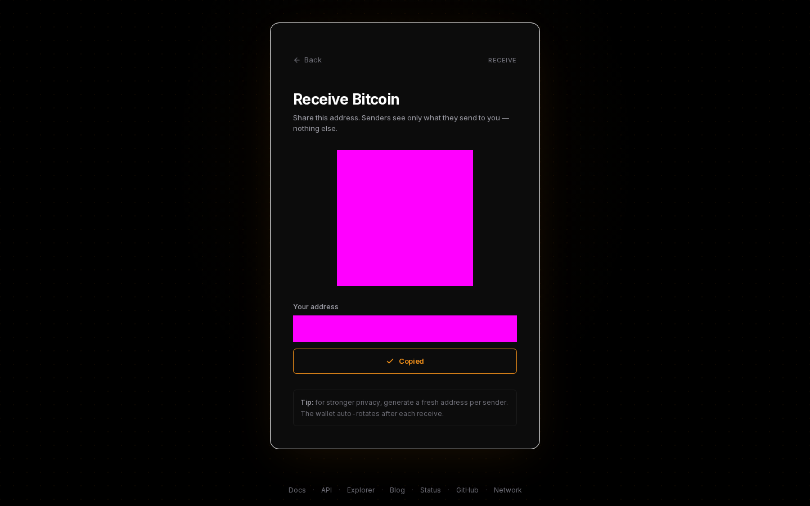
Adresse kopiert
Nach Klick auf „Copy address" wechselt der Button zu „Copied" mit Checkmark — die volle Adresse liegt in der Zwischenablage.
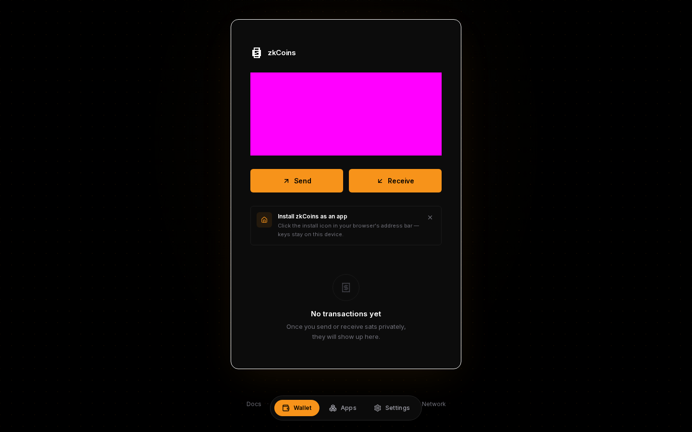
„Back" zurück zur Wallet
Link oben links bringt dich zurück. Kein Verlust von Eingaben — die Receive-Page hat keinen Edit-State.
Einstellungen & Disconnect
Wallet-Verwaltung. Hier siehst du Auth-Methode, Netzwerk, App-Version — und kannst die Wallet vom Gerät trennen.
Erreicht über die Bottom-Navigation rechts (Settings-Icon) oder via Direkt-URL
/settings. Der Disconnect-Button löscht die verschlüsselte Wallet aus
IndexedDB und führt zurück zum Welcome-Screen.
Settings-Screen
Settings via Bottom-Nav
Aus der Wallet auf das Settings-Icon klicken — Cliend-side Navigation, kein Reload.

Settings — Desktop
Header mit Network-Badge oben rechts. Sektionen: Account (Adresse + Auth-Methode), Preferences (planned Toggles disabled), Resources (Links). Disconnect-Button am Ende.
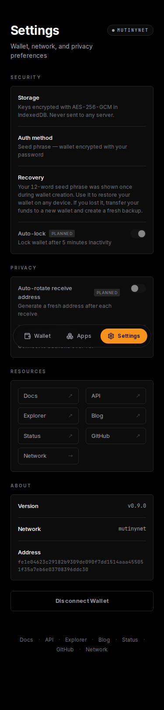
Settings — Mobile
Identische Information, vertikal gestapelt.
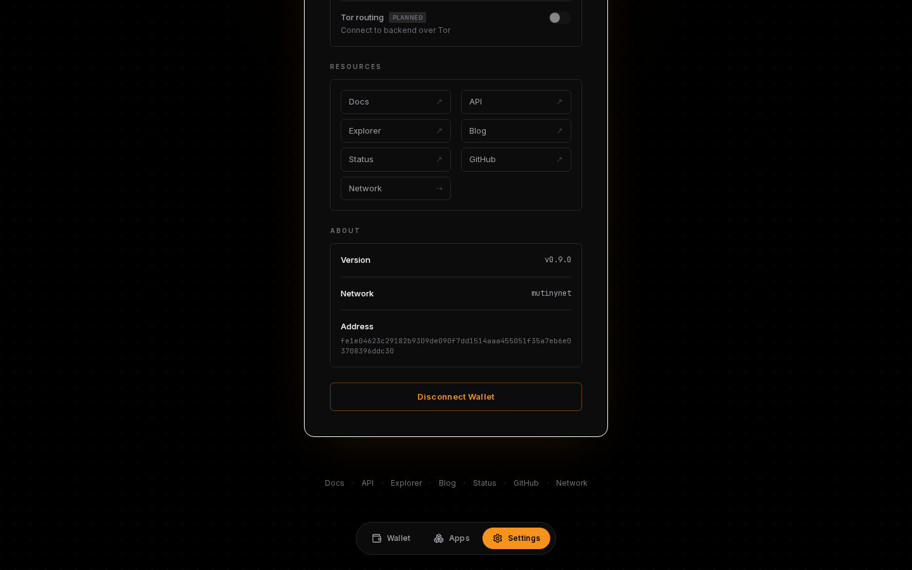
Disconnect-Button (Hover)
Der Disconnect-Button hebt sich rot ab beim Hover — visueller Hinweis auf die Destruktivität der Aktion.
Disconnect-Bestätigung
Disconnect ist irreversibel auf diesem Gerät. Ohne Seed-Phrase kannst du nichts wiederherstellen. Deshalb fragt die App noch einmal explizit nach.

Confirm-Dialog (window.confirm)
Browser-natives „Disconnect this wallet? Make sure you have your seed phrase saved." mit OK/Cancel.
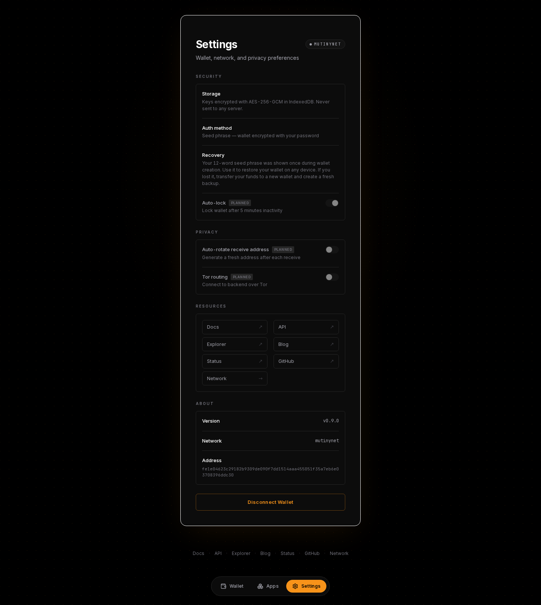
Cancel — nichts passiert
Du landest unverändert auf der Settings-Seite. Wallet bleibt aktiv.

Nach „OK" — zurück zum Welcome
Die App löscht IndexedDB, resettet die Zustand-Stores und navigiert zur Welcome-Page. Ein neuer Onboarding-Pfad startet.
Navigation & Netzwerk-Status
Die globale App-Shell — Bottom-Nav für die drei Hauptbereiche, Footer-Links zu zusätzlichen Ressourcen, Network-Badge mit Live-Status.
Bottom-Navigation
Die Bottom-Nav ist auf allen Hauptseiten sichtbar (außer Onboarding und Sub-Pages wie /send /receive). Der aktive Tab ist Bitcoin-Orange hervorgehoben.
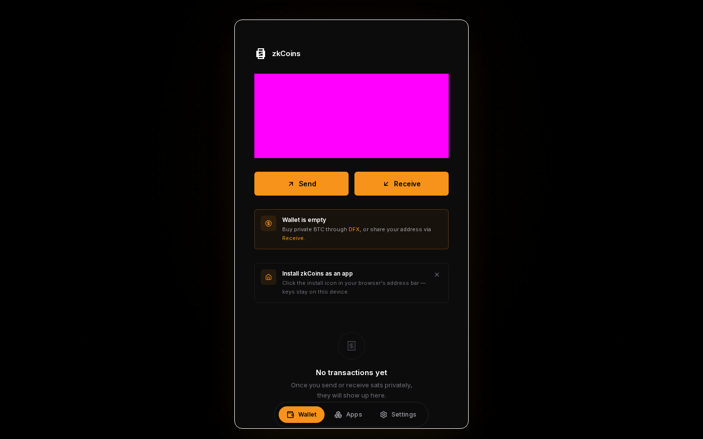
Wallet-Tab aktiv
Standardansicht: Wallet ist der Default-Tab. Apps-Tab und Settings-Tab sichtbar (Apps gated via DEV-Flag).

Settings-Tab aktiv
Beim Wechsel hebt sich der Settings-Tab ab. Client-side Routing — kein Vollreload.
Footer-Links
Zwei Layouts: eine kompakte Row-Variante unter der Wallet und ein Grid-Variant in den Settings § Resources.

Footer — Row
Eine Reihe von Links: Docs, Network, Status, Privacy, X. Unter Wallet/Send/Receive sichtbar.
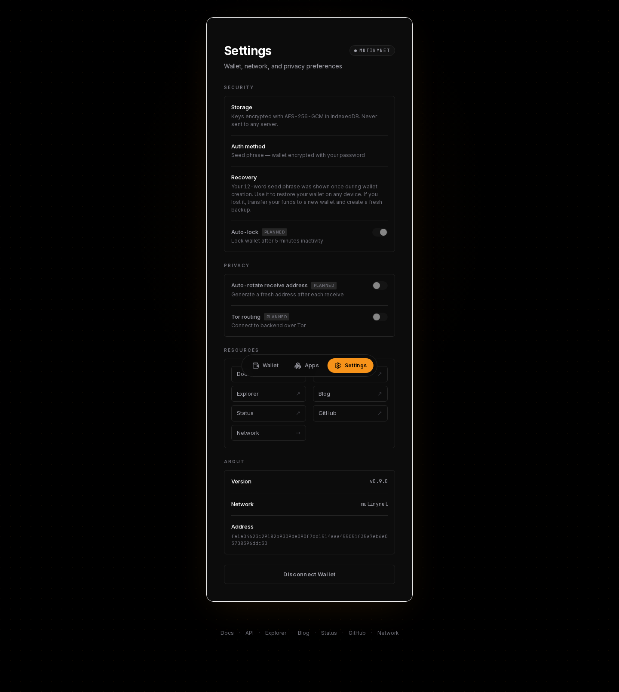
Footer — Grid (in Settings)
In den Settings als „Resources"-Sektion. Volle Breite, Grid-Layout für bessere Lesbarkeit.
Netzwerk-Badge
Das kleine Badge oben rechts in den Settings zeigt auf einen Blick, mit welchem Netz die App verbunden ist — Mainnet, Signet, Regtest, oder Loading.
Verbunden mit Signet (DEV)
DEV-Bundle: das Badge zeigt „signet" — der DEV-Server läuft gegen Bitcoin Signet.
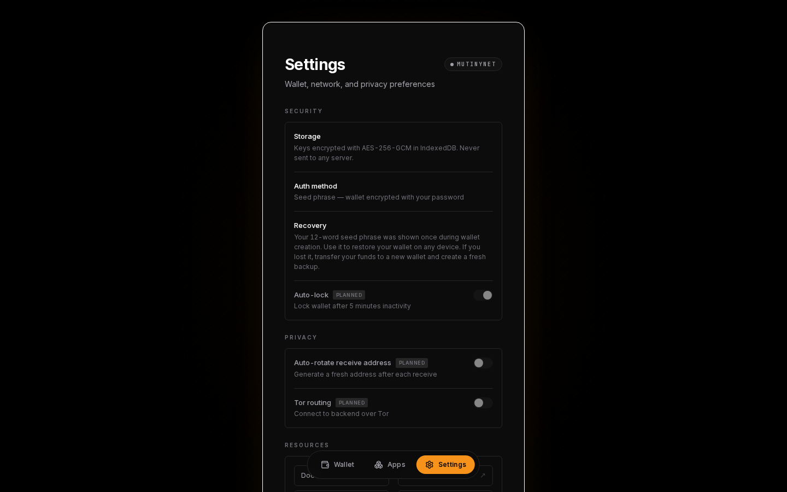
Loading-State
Solange /api/info noch keine Antwort gegeben hat, zeigt das Badge
einen neutralen Lade-State (kein farbiger Dot).
Als App installieren (PWA)
zkCoins läuft im Browser, kann aber als Progressive Web App installiert werden — eigenes Icon, eigenes Fenster, schnellerer Start, Offline-Caching.
Je nach Browser/OS unterstützt die App drei Modi, die das PwaPrompt-Banner
automatisch erkennt:
-
Native (Chrome, Edge, Android) — die App fängt das
beforeinstallprompt-Event ab und zeigt einen eigenen „Install"-Button. Klick öffnet den nativen Install-Dialog des Browsers. - iOS Safari — kein deferred-Prompt-Event verfügbar. Statt eines Buttons zeigt die App eine Schritt-für-Schritt-Anleitung mit dem Safari-Share-Icon.
- Desktop ohne BIP-Event — Firefox, alte Chromium-Versionen etc.: manuelles Fallback mit Hinweis auf das Install-Icon in der Adress-Leiste.
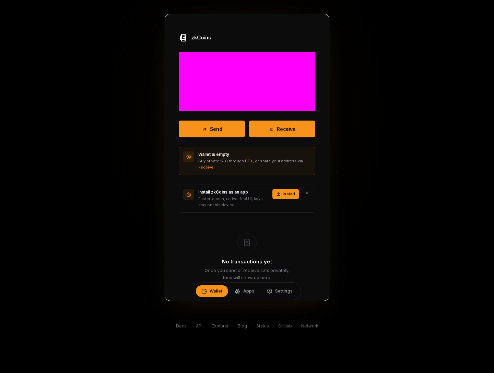
Native — „Install"-Button sichtbar
Chrome/Edge/Android: Das Banner zeigt einen Bitcoin-Orange „Install"-Button. Klick → nativer Dialog des Browsers.
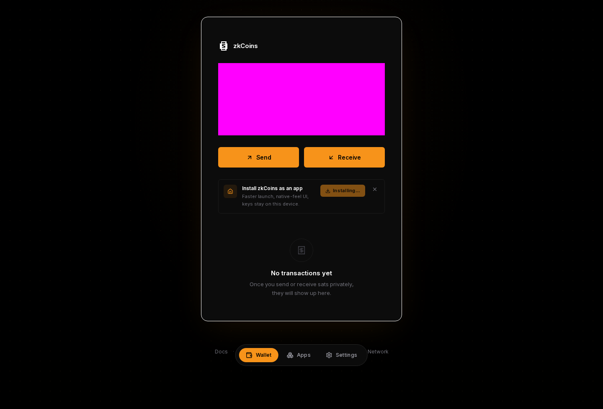
Native — „Installing…"
Während der Browser den Install-Dialog zeigt, wechselt der Button zu „Installing…" und wird disabled.
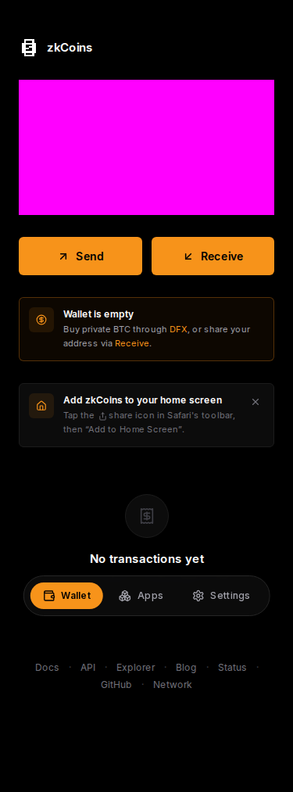
iOS Safari — Share-Icon-Anleitung
„Tap the [Share] icon in Safari's toolbar, then 'Add to Home Screen'." — visueller Hinweis aufs Share-Icon inline.
Manueller Fallback
„Click the install icon in your browser's address bar — keys stay on this device."
Schlüssel bleiben lokal: PWA-Installation ändert nichts an der Sicherheits-Architektur. Die Wallet liegt weiterhin AES-256-GCM-verschlüsselt in IndexedDB der gleichen Origin — egal ob du die App im Browser-Tab oder als installierte PWA öffnest.
Sicherheits-Routing — was passiert ohne Wallet?
Wenn du eine geschützte Route direkt aufrufst (/send,
/receive, /settings) ohne aktive Wallet im Store, sichert die
App die Route ab und leitet dich kontrolliert weg.
Die Guards funktionieren clientseitig: 100 ms nach Mount prüft jede der drei Routen
useWalletStore.getState().account; wenn leer, dann
router.replace('/'). In der kurzen Übergangsphase zeigt die App einen
Redirect-Placeholder, statt einen Flash leerer Komponenten.
/send — kein Account
Wallet-Icon + „Redirecting to wallet…" als Placeholder. Nach 100 ms: client-side Redirect zu /.

/receive — kein Account
Identische Placeholder-Variante. Auch hier 100-ms-Redirect.
/settings — kein Account
Settings hat keine Redirect-Placeholder — die Conditional-Sektionen verschwinden einfach. Nach 100 ms erfolgt der Redirect zur Welcome-Page.
Test-Abdeckung & Qualität
Jeder Screenshot in diesem Guide ist gleichzeitig eine Visual-Regression-Baseline. Wenn dieser Guide aktuell ist, dann ist die App auch in CI grün.
| MVP-Funktion | E2E-Spec | Tests | Baselines |
|---|---|---|---|
| Wallet erstellen — Seed | 02-create-seed |
10 | 9 |
| Wallet wiederherstellen — Seed | 03-restore-seed |
10 | 9 |
| Wallet entsperren — Passwort | 04-unlock-password |
5 | 5 |
| Disconnect Wallet | 05-disconnect |
7 | 7 |
| Balance ansehen | 06-balance |
6 | 6 |
| Tx-History anzeigen | 07-send (Post-Send-Rows) |
— | in 12 |
| Bitcoin senden (2-phase) | 07-send |
13 | 12 |
| Bitcoin empfangen (Adresse + QR) | 08-receive |
4 | 4 |
| Network-Info-Badge | 09-network-and-shell |
6 | 6 |
| Install als PWA | 10-pwa |
4 | 4 |
| Σ MVP | 65 | 62 | |
| + Welcome / Onboarding | 01-onboarding-welcome |
5 | 5 |
| + Route-Guards | 11-cross-spec-redirects |
3 | 3 |
| Σ gesamt | 73 | 70 | |
Unit-Coverage
Auf der MVP-Surface (src/lib/** + src/stores/**):
100 % Lines, Statements, Branches, Functions. CI failt bei jedem Drop.
Integration in CI
Vier required Branch-Protection-Checks auf develop:
Lint & BuildUnit TestsRust Crypto TestsE2E Tests— 73 Tests inkl. 70 Visual-Baseline-Vergleiche
Keine PR mergt rot. Wenn das UI sich ändert, wird die Baseline über den dedizierten Regenerate Visual Baselines-Workflow neu generiert.
Stand: 2026-05-16. Vollständiger Plan und Implementierungs-Details in
e2e/README.md. Live unter
zkcoins.app.